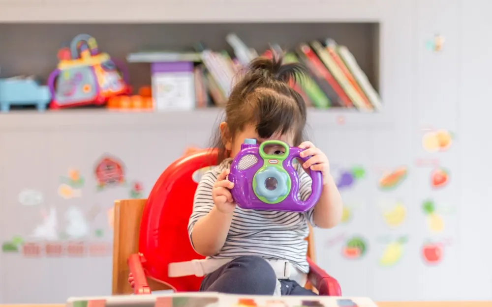

저출산, 한국의 가장 큰 고민

한국은 세계에서 출산율chulsannyul · taux de natalité이 가장gajang · le plus 낮은 나라 중 하나다. La Corée est l'un des pays au taux de natalité le plus bas du monde. 2023년 합계출산율hapgye chulsannyul · indice de fécondité은 0.72명으로, 역대 최저치yeokdae choejeochi · plus bas niveau historique를 기록했다girokhaetda · a enregistré. En 2023, l'indice de fécondité est tombé à 0,72 enfant, un plancher historique.
이는 한 여성이 평생pyeongsaeng · toute la vie 낳는nanneun · mettre au monde 아이가 한 명도 채chae · même pas (atteindre) 되지 않는다는 뜻이다. Cela signifie qu'une femme met au monde, en moyenne, moins d'un enfant dans toute sa vie. 인구ingu · population가 줄어들면 경제와 사회 전반jeonban · l'ensemble에 큰 영향을 미친다yeonghyangeul michinda · exercer une influence. Quand la population diminue, c'est toute l'économie et la société qui en subissent les effets.
저출산jeochulsan · dénatalité의 원인won-in · cause은 복합적bokhapjeok · complexe, multiple이다. Les causes de la dénatalité sont multiples. 우선 집값jipgap · prix du logement과 교육비gyoyukbi · frais d'éducation가 너무 비싸 아이를 키우기가 부담스럽다budamseureopda · être pesant. D'abord, le logement et l'éducation coûtent si cher qu'élever un enfant devient un fardeau. 많은 청년cheongnyeon · les jeunes들이 안정된anjeongdoen · stable 일자리를 구하기 어려워 결혼조차gyeolhonjocha · même le mariage 미룬다. Faute d'emploi stable, beaucoup de jeunes repoussent jusqu'au mariage lui-même.
가치관gachigwan · système de valeurs의 변화byeonhwa · changement도 중요한 이유다. L'évolution des mentalités est aussi une raison importante. 과거와 달리gwageowa dalli · contrairement au passé 결혼과 출산을 필수pilsu · obligation, indispensable가 아닌 선택으로 여기는yeogineun · considérer comme 사람이 늘었다. Contrairement à autrefois, on est de plus en plus nombreux à voir mariage et enfants comme un choix, non une obligation. 특히 여성들은 일과 육아yuga · garde des enfants를 병행하기byeonghaenghagi · mener de front 어려운 현실에 부딪힌다budichinda · se heurter. Les femmes, surtout, se heurtent à la difficulté de mener de front travail et garde des enfants.
한 인구학inguhak · démographie 전문가jeonmunga · expert는 다음과 같이 분석한다bunseokhanda · analyser. Un démographe livre l'analyse suivante. "출산은 개인gaein · individu의 선택이지만, 그 배경baegyeong · arrière-plan, contexte에는 사회 구조gujo · structure의 문제가 깔려 있습니다." « Avoir un enfant est un choix individuel, mais en toile de fond se cachent des problèmes de structure sociale. »
저출산이 계속되면 노동 인구nodong ingu · population active가 줄고 노인 부양buyang · prise en charge 부담budam · charge은 커진다. Si la dénatalité persiste, la population active recule et la charge de soutien aux aînés s'alourdit. 학교와 군대gundae · armée, 지방jibang · province 도시들은 이미 인구 감소의 영향을 체감하고chegamhago · ressentir concrètement 있다. Écoles, armée et villes de province ressentent déjà les effets du déclin démographique.
정부는 막대한makdaehan · colossal 예산yesan · budget을 들여 다양한 대책daechaek · mesure을 내놓았다. Le gouvernement a engagé des budgets colossaux et multiplié les mesures. 출산 지원금jiwon-geum · aide financière, 육아 휴직yuga hyujik · congé parental 확대, 보육 시설boyuk siseol · structure d'accueil 확충 등이 대표적이다. Primes à la naissance, congé parental élargi, multiplication des crèches en sont des exemples. 그러나geureona · cependant 출산율은 좀처럼jomcheoreom · guère, difficilement 오르지 않고 있다. Pourtant, le taux de natalité ne remonte guère.
전문가들은 단순한 현금hyeongeum · argent liquide 지원만으로는 한계hangye · limite가 있다고 지적한다jijeokhanda · souligner, pointer. Les experts soulignent que de simples aides en numéraire montrent vite leurs limites. 일과 가정gajeong · foyer, famille을 함께 지킬 수 있는 사회 분위기bunwigi · climat, ambiance와 제도jedo · système, dispositif가 필요하다는 것이다. Il faudrait, disent-ils, un climat social et des dispositifs permettant de préserver à la fois travail et famille.
저출산 문제는 한 세대sedae · génération 안에 해결되기haegyeoldoegi · être résolu 어려운 과제gwaje · défi, tâche다. La dénatalité est un défi qui ne se résoudra pas en une seule génération. 그러나 미래mirae · avenir 세대를 위해 지금부터 풀어 가야 할 가장 시급한sigeupan · urgent 숙제sukje · devoir, tâche이기도 하다. Mais c'est aussi le devoir le plus urgent à entreprendre dès maintenant, pour les générations futures.